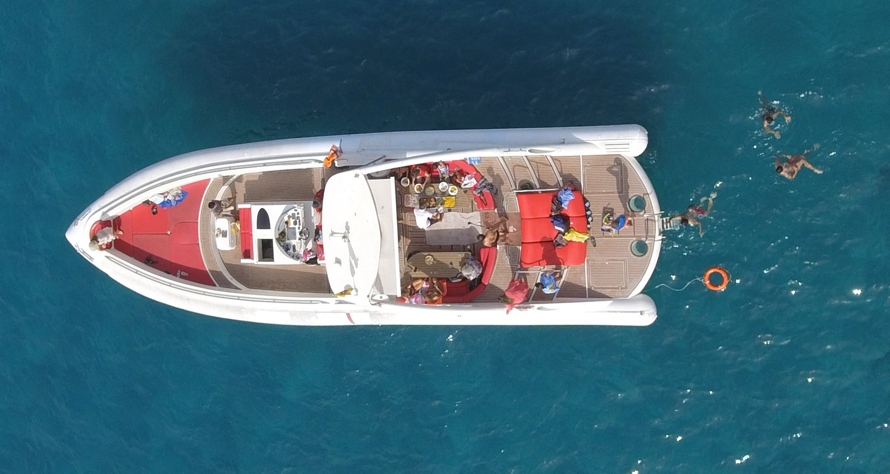
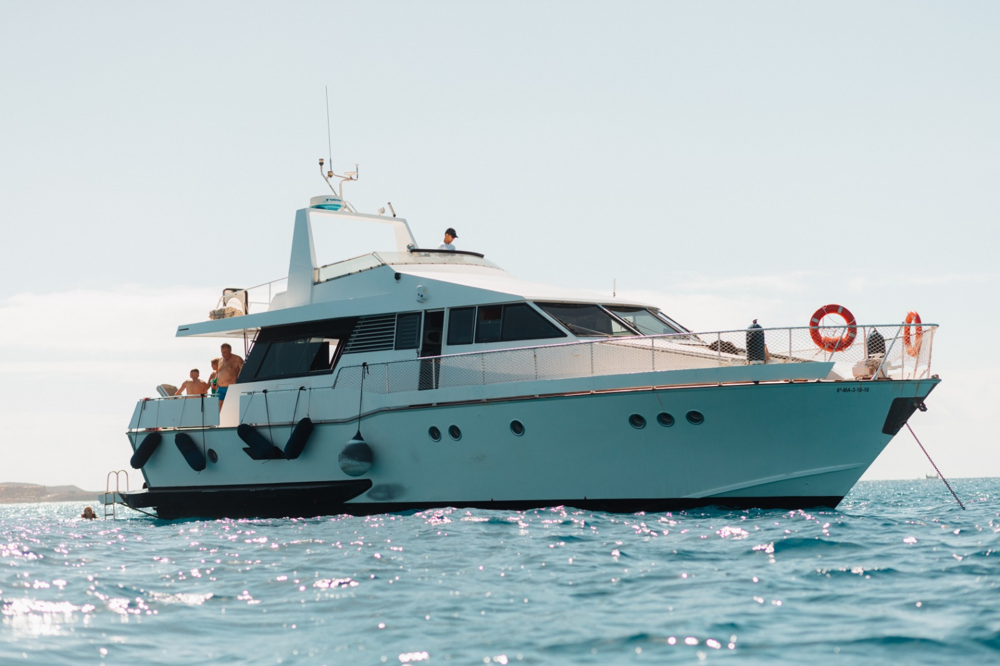

Mezzogiorno, 12 ospiti, l'oceano davanti e niente altro intorno. Lo yacht privato è il modo giusto per vivere Tenerife dal mare: niente itinerari fissi, decidi tu dove fermarti, dove tuffarti, dove pranzare.
Disponibili due opzioni di noleggio — Fun Yacht per chi vuole comfort senza esagerare, Luxury Yacht per chi cerca l'esperienza top di gamma. Entrambe con skipper certificato, cucina a bordo e attrezzatura snorkeling inclusa.

12 pax · Tutto incluso
Yacht da diporto pronto per la giornata: pranzo, bevande, attrezzatura snorkeling, skipper esperto. Ottimo rapporto qualità/prezzo per gruppi di amici.
12 pax · Premium
Yacht di alto gamma con interni curati, equipaggio professionale, catering a richiesta. Ideale per occasioni speciali — anniversari, addii al celibato, eventi aziendali.
Tenerife è una delle migliori zone al mondo per balene pilota e delfini in mare aperto.
Spiagge accessibili solo via mare lungo la costa di Adeje. Perfette per snorkeling.
Partenza nel tardo pomeriggio, aperitivo a bordo, tramonto al largo. Mood relax.
Dimmi quando, quanti siete e quale opzione preferisci. Ti rispondo con prezzi e disponibilità.
💬 Contattaci su WhatsApp